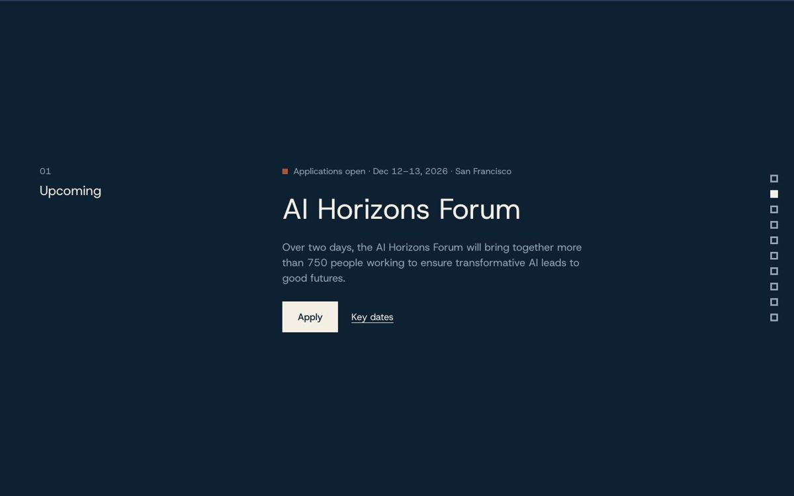
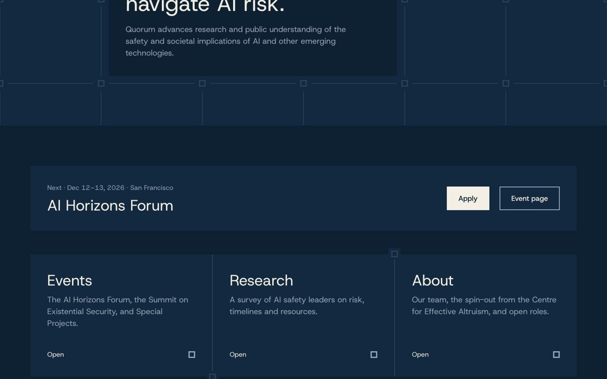
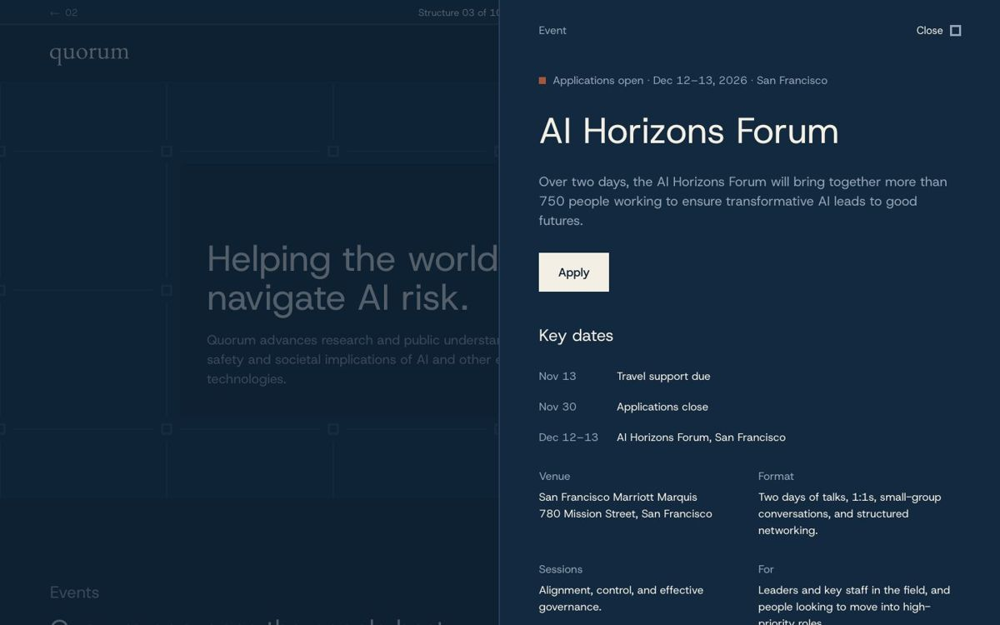
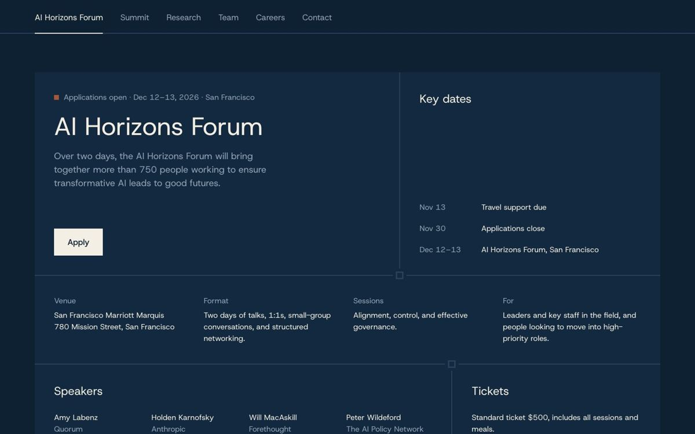
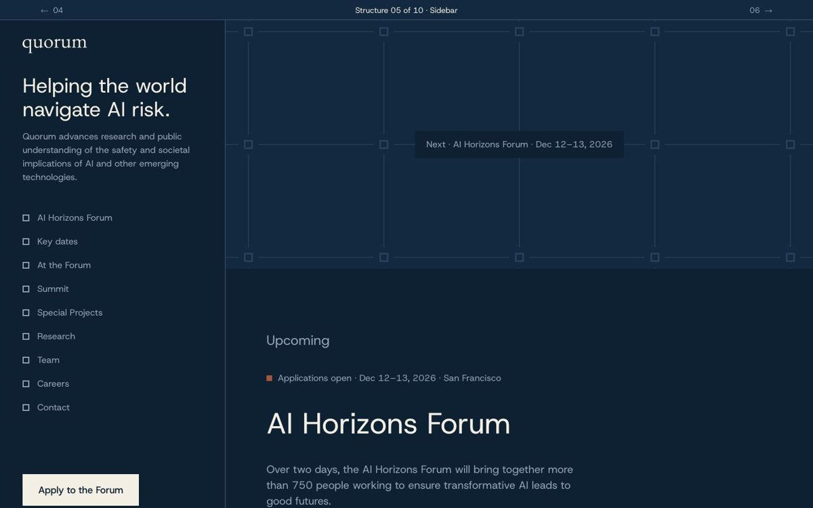
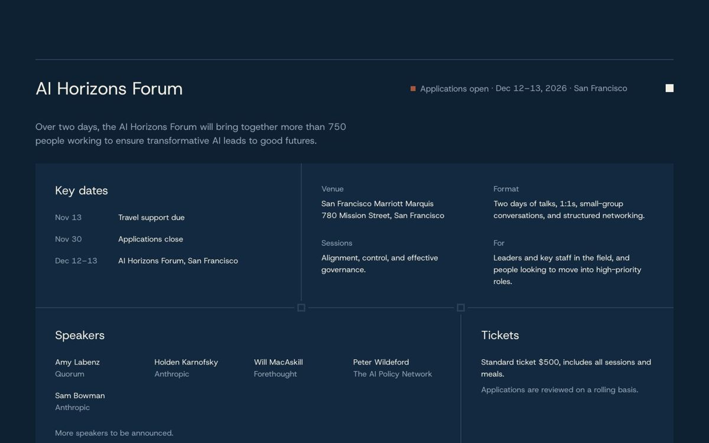
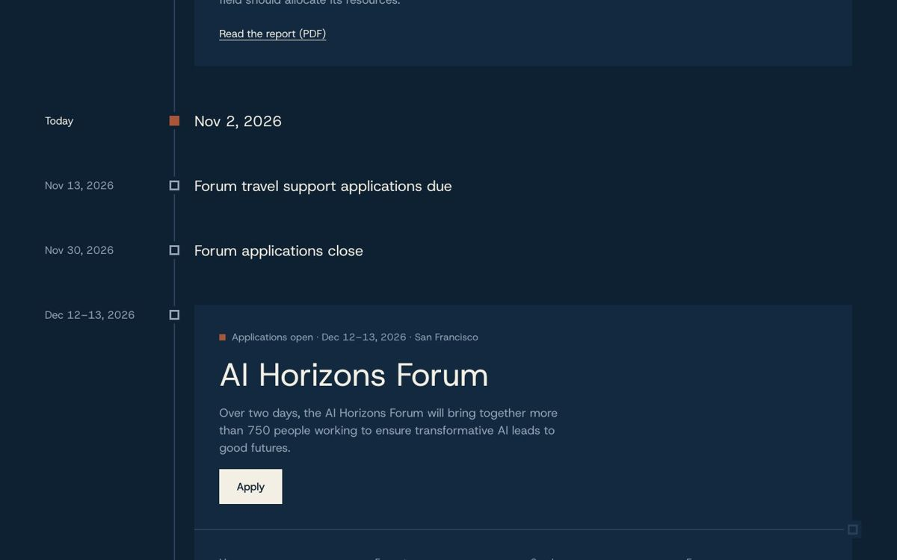
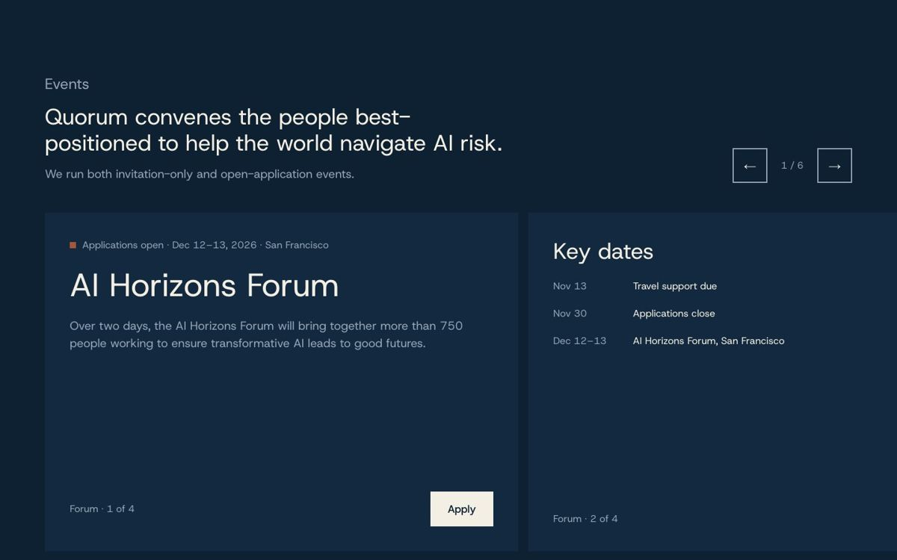
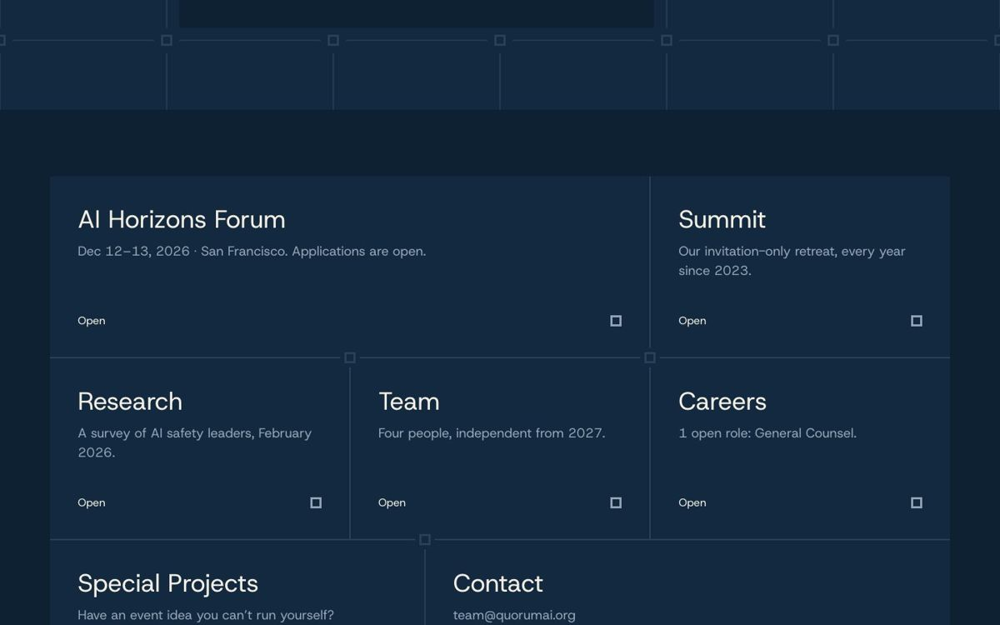
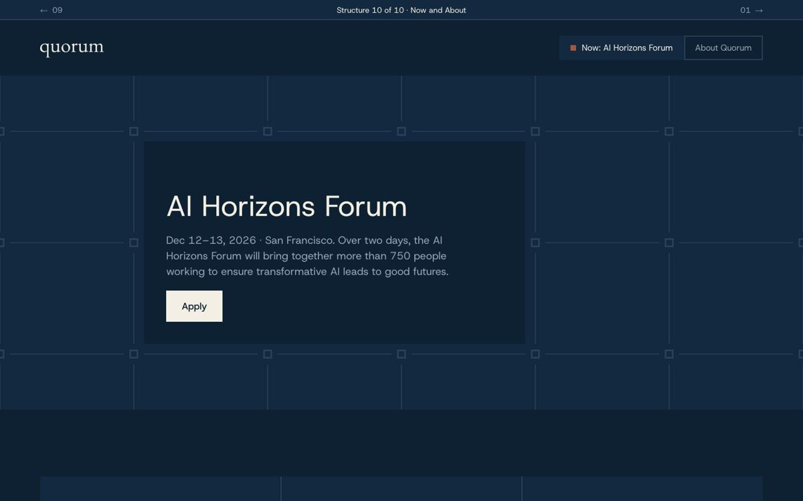

Ten structures
The clean landing in Quorum’s navy, with the same content separated ten ways. A strip at the top of each page steps through the rest.

ChaptersOne subject per screen. The Forum gets three chapters of its own; a column of nodes shows where you are.
PagesA short home that points to separate pages: Events, one page per event, Research, About and Contact.
Index and panelEvents, research and roles as short rows. Each row opens its full detail in a side panel, so the page stays a list.
TabsBelow the statement, a tab bar shows one subject at a time: the Forum, the Summit, Research, Team, Careers or Contact.
SidebarThe statement and an index stay fixed on the left. On the right, each subject has its own block, the Forum split into three.
AccordionEvery subject is one row with its title and a single line. Opening a row closes the others, so only one is ever expanded.
TimelineEverything on one dated line, from the first Summit in 2023 to independence in 2027. Today is marked, so what is next is obvious.
RailEvents become a horizontal rail with one idea per card: the Forum across four cards, then the Summit and Special Projects.
DoorsThe home is a single map of seven doors under the statement. Each door opens its own full page on top, and closes back to the map.
Now and AboutTwo modes: Now is the upcoming Forum and nothing else; About is the organisation. A switch in the header moves between them.